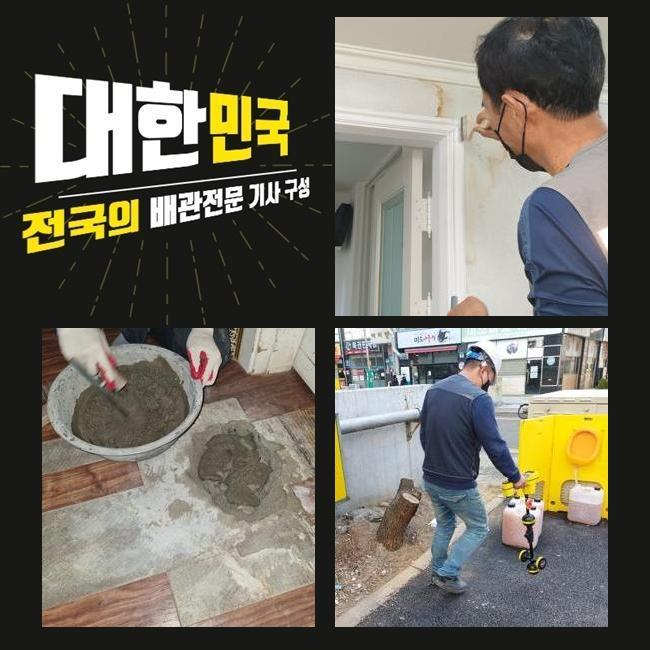
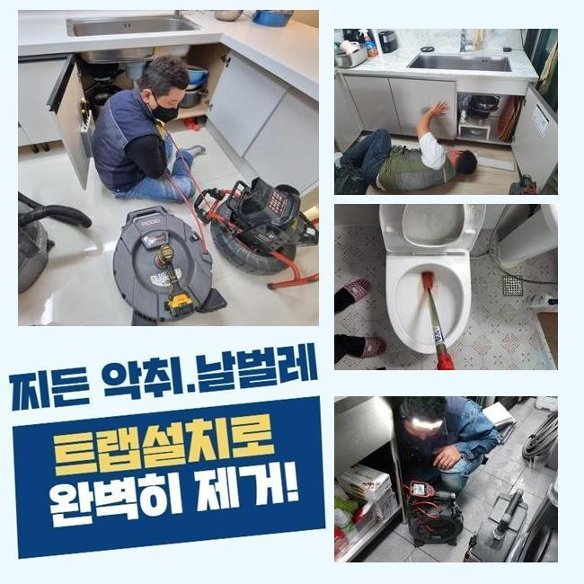
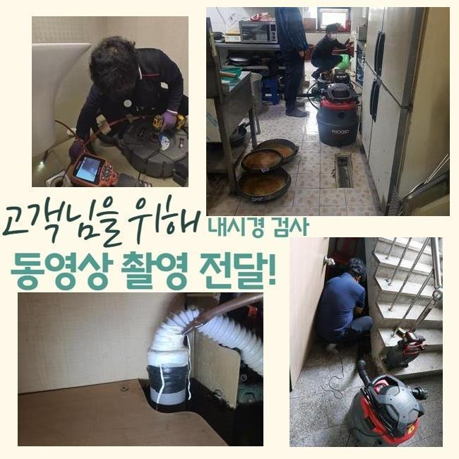
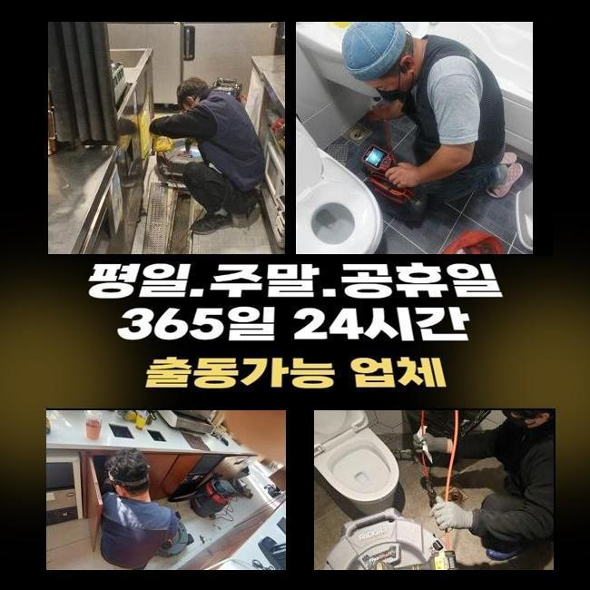
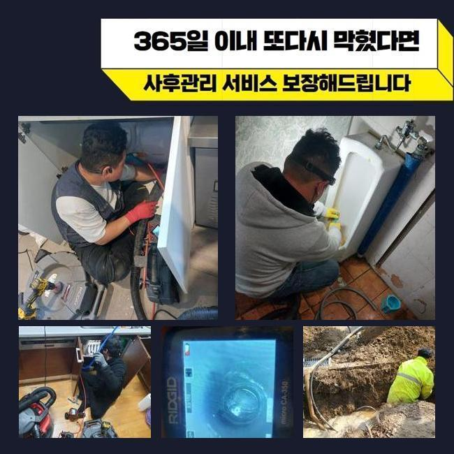

🏠 이동싱크대막힘 초평동 하수구청소 통수전문
용인 싱크대막힘 전문 시공 후기

📋 작업 개요
- 위치: 용인
- 서비스 유형: 싱크대막힘, 하수구막힘, 배관막힘, 맨홀막힘, 역류해결, 뚫는업체, 배관청소, 고압세척
- 작업 일시: 2025. 2. 26. 16:31
- 업체명: 하수구수사대 (010-5615-2118)
🔍 문제 상황
이동싱크대막힘 초평동 하수구청소 통수전문
배수관은 일반적인 집이나 가게에 반드시 설치하는 시설로써 매우 중요합니다
하수를 처리하는 시스템으로 쾌적한 일상을 유지하도록 도와주며 질병 발생 확률을 낮추게됩니다
이러한 배수구가 막혀버리면 쌓인 이물질들이 지독한 냄새가 올라오고 화장실이나 주방에서 다양한 문제가 발생합니다
이로 인해 하수가 거꾸로 올라오거나 맑은 물을 이용할 수 없게되는 상황이 생기게 되며 불편한 일들이 일어나게됩니다
아침에 하수관 역류사태로 의뢰를 급히 맡기셔서 현장에 방문했어요
연립주택이라 일단 고객님의 주소지부터 찾아갔어요
확인해본 결과로는 집안에 계신 고객님께서 수도를 사용하실때마다 부동전에 연결 되어있는 하수관에서 하수가 넘치는 일들이 발생했어요
유독 주방쪽에서 수도를 사용하실때 배수라인을 따라 풍기는 고약한 냄새까지 심각했어요

🔎 원인 분석
💡 전문가 진단: 정밀 진단 장비를 사용하여 슬러지의 고착 여부를 판명하고 타격/세척 작업을 실시했습니다.
문제의 정확한 내용을 체크하기 위해서 내시경장비를 투입해서 본관의 내부상태를 확인했습니다
머리카락과 다양한 이물질로 막혀 하수라인에서 지독한 악취까지 발생시키고 있었고 집안으로 역류하는 등의 사고가 일어날 수도 있으므로 신속하게 수리에 들어갔습니다
중심이 되는 본관의 중요성을 설명 해드리겠습니다
중심 맨홀의 배수구는 일생생활 전반의 과정에서 배출되는 하수를 내보내는 매우 중요한 장치입니다
본관이 막힌 경우엔 안쪽에서부터 넘친 물과 이물질이 누적되며 부동전이 연결된 하수관에서 역류하는 상황까지 발생합니다
이럴때는 내부쪽에서 배관만 뚫는것으로 사태를 처리하는건 불가능하므로 메인이 되는 중심관을 해결하셔야 이후에 사용이 수월하게 진행되실 거예요
보통 집 안에서 발견되는 작은 문제점은 손쉽게 해결하시는 경우가 많지만 사이즈가 큰 메인 배수구는 고압세척장치를 써서 벽에 달라붙은 슬러지를 스케일링 할수있어요
고압세척기기의 다양한 크기의 선은 배수라인의 꺾인 부위까지 전부 커버 할 수 있으므로 정확하고 빠르게 청소가 가능해요
중심관에 고압세척기를 이용하여 음식에서 나온 찌꺼기들과 이물질등을 청소했습니다
이후에 내시경장비를 재투입하여 오수가 정상적으로 나오는지 체크했어요

🔧 작업 과정
의뢰인께서 모니터를 함께 보시면서 배수구가 완벽하게 청소 완료 된 것을 보고 안심하시며 마지막 정리까지 요청 하셨어요
다음 현장에 출동하여 동일하게 막힌 배수구를 수리하였습니다
이번에는 베란다에서 하수가 역류하는 상황으로 부패한 노폐물이 섞여올라와 악취까지 생기는 상황이였어요
보통은 세면대 밑부분이나 세탁실의 배수관을 통하여 라인 전체를 청소하는게 보편적이지만 오늘 현장은 작업이 쉽지 않은 트랩 구조로 난관에 봉착했어요
복잡한 구조의 트랩들은 벌레유입을 막는 것에는 유용하지만 구조적인 특성상 불순물이 누적되어 하수관 막힘으로 인한 역류사고를 일으키게 되는 이유가 되기도 해요
이러한 현장에서는 고압세척기 이용이 불가능한 구조인 확률이 높습니다
노즐의 투입이 힘들기때문에 고객께 더이상의 금액을 부담시키지 않기 위해서 합리적인 작업을 찾아내야 했습니다
P트랩의 배관 특성상 고압세척장치를 사용하게 되면 배관이 손상될 수 있는 위험도가 높아서 플랙스 샤프트기를 이용해 문제점을 해결하기로 했어요
샤프트장치는 회전하는 힘으로 배수라인 안쪽에 누적된 침전물을 청소합니다
샤프트기기는 배수라인을 보호하면서 끝부분까지 청소할 수 있어요
장비의 끝쪽에 비질을 하는 듯한 솔을 장착하고 불순물을 세척할 수 있기때문에 좁은 배관에도 쉽게 투입돼서 하수라인의 깊은 곳에 누적된 침전물도 완전하게 제거합니다
한두번의 작업으로는 완전하게 세척되지 않았으므로 샤프트기를 반복해서 재투입하여 변형되어버린 이물질들을 세척했습니다
작업을 끝내고 통수가 잘 이루어지는지 체크했고 의뢰인께서도 역류현상이 일어났던 하수구를 같이 확인하시고나서 만족하시며 감사인사를 전하셨습니다
하수관에 막힘문제가 발생했을때 바로 대응하지 않으면 배수관에 쌓여있는 불순물이 부패되면서 지독한 냄새까지 생겨나게되며 통수가 정상적으로 이루어지지 않으므로 하수가 범람하는 문제들이 발생합니다
하수관 내부에서 압력을 받는 스트레스가 계속적으로 발생하면 하수관이 손상되어 파손의 위험이 생기며 고객님의 비용적인 부담감 상승과 시간 손해까지 발생합니다


✅ 작업 완료
배수구와 관련된 문제점이 발견 되셨다면 전문진에게 도움을 요청하셔서 신속하게 대비책을 준비하셔야 합니다
오늘 현장에서는 하수라인의 막힘 문제를 처리하였고 하수관 악취등의 제거까지 완료했어요
사례자님의 생활 속 습관등을 고치실 것을 안내드리고 하수설비의 이상이 재발하는 경우가 없게끔 검수를 마쳤습니다
배관의 문제등이 발생하셨다면 지체하지 마시고 저희들에게 문의전화 주시면 신속하고 정확하게 처리 해드리겠습니다



⚠️ 주방 싱크대 배관 막힘 예방 수칙
- ✅ 기름기가 묻은 식기나 프라이팬은 설거지 전 키친타올로 반드시 기름때를 닦아내세요.
- ✅ 주기적으로 싱크대 개수대에 뜨거운 물을 가득 받아 한 번에 내려 배관 내부 기름을 씻어내세요.
- ✅ 배수구 거름망을 미세한 필터로 사용하시고 음식물 찌꺼기가 틈으로 새어 들지 않게 관리하세요.
- ✅ 베이킹소다와 식초를 뜨거운 물과 함께 일주일에 한 번씩 부어주면 배관 살균과 막힘 예방에 좋습니다.
💡 핵심 정리
- 확실한 장비 작업(내시경 점검 및 샤프트 스케일링)으로 원인을 뿌리 뽑습니다.
- 작업 후 1년 이내에 동일한 부위 재발 시 100% 무상 A/S 서비스를 보장합니다.
- 서울 · 경기 · 인천 전 지역에 24시간 언제든 긴급 출동할 수 있도록 항시 대기 중입니다.
❓ 자주 묻는 질문 (FAQ)
🚨 용인 싱크대막힘 문제로 고민이신가요?
정확한 원인 진단과 확실한 시공으로 재발 없는 해결을 약속드립니다.
24시간 긴급 출동 | 서울 · 경기 · 인천 전지역 | 1년 내 재발 시 무상 A/S